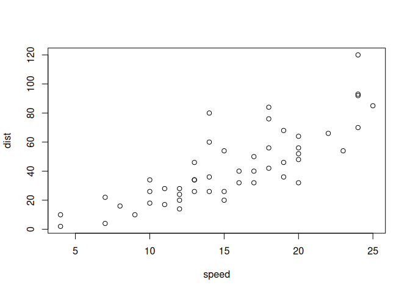

1
Here is a figure
2
Here is the putting of a figure inside another built in environment
3
Here is the putting of a figure inside a newtheorem
Test 004: Put a labeled figure/table inside a theorem/proof etc.
3
Here is the putting of a figure inside a newtheorem
Example:
An example

Figure 3.1: Something to do with cars